01先分清两类配置
地图位置、物体尺寸、耐久、弹药和发射参数放在单关 JSON；主动、被动和练习默认构筑放在整轮 JSON。文件都在工程目录 D:\愤怒的小鸟 中。
| 你要改什么 | 文件位置（相对工程根目录） |
|---|---|
| 五个正式关 | Assets/Content/Levels/C01.json ～ C05.json |
| 四个练习关的地图 | Assets/Content/Levels/P01.json ～ P04.json |
| 能力数值、练习构筑 | Assets/Content/RunConfiguration.json |
| Unity 入口场景 | Assets/Scenes/FoundryDemo.unity |
使用 Unity 6000.3.27f1 打开工程，在底部 Project 中进入 Assets → Scenes，双击 FoundryDemo。此时 Scene 里没有塔是正常的：关卡从 JSON 创建，下一步载入即可看到。

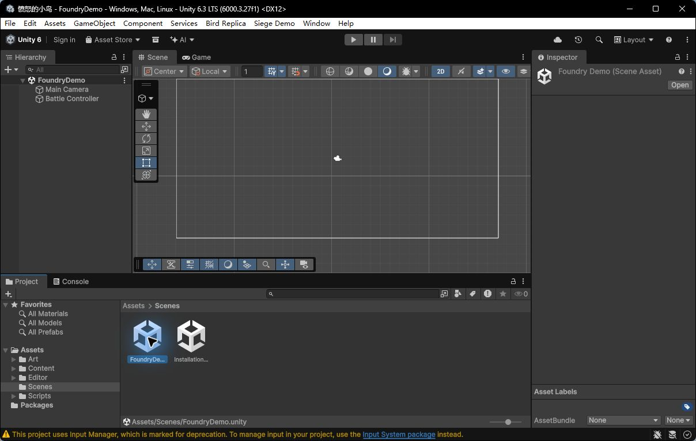
InstallationCheck 是安装检查场景；DemoLevel.json 是旧版样例，当前九关使用 Levels 目录。02把 C01 木塔载入编辑器
- 顶部选择
Siege Demo → Level → Load JSON...。 - 进入工程的
Assets/Content/Levels，选中C01.json，点击打开。 - 左侧出现
Level Preview；展开后选择木柱或敌人。物体不在视野里时，将鼠标移到 Scene 并按 F 聚焦选中物体，再用滚轮拉远。

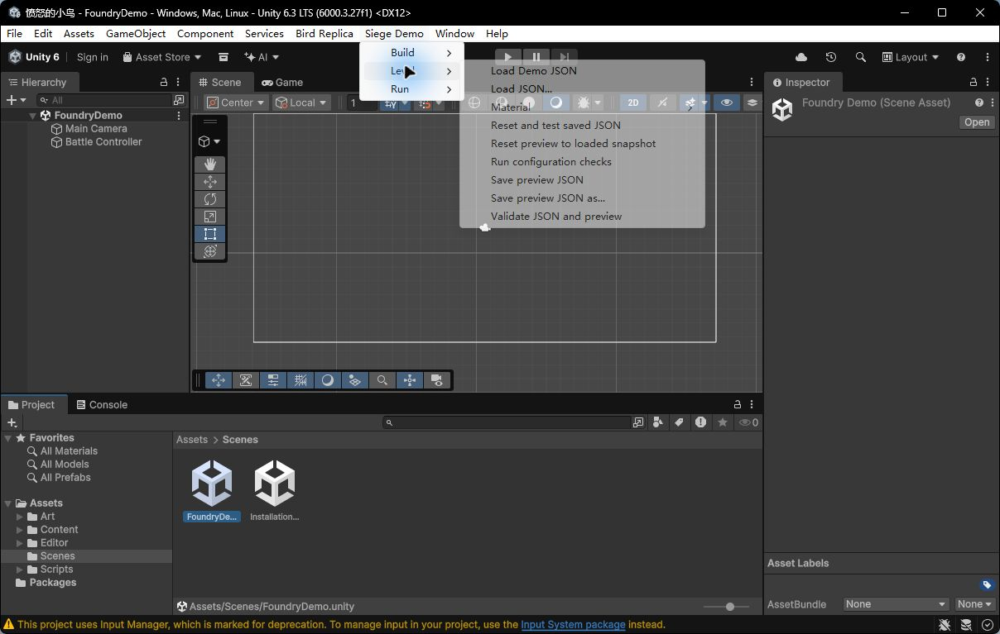

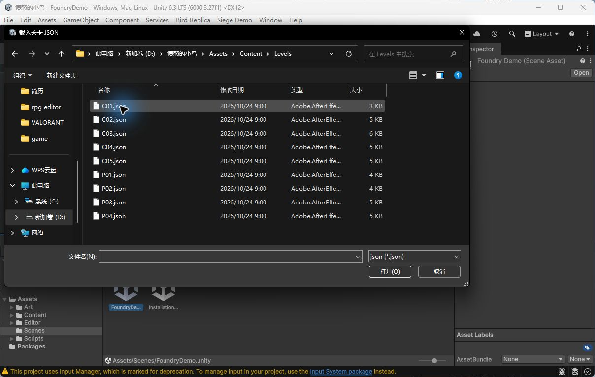
03移动、旋转、复制地图物件

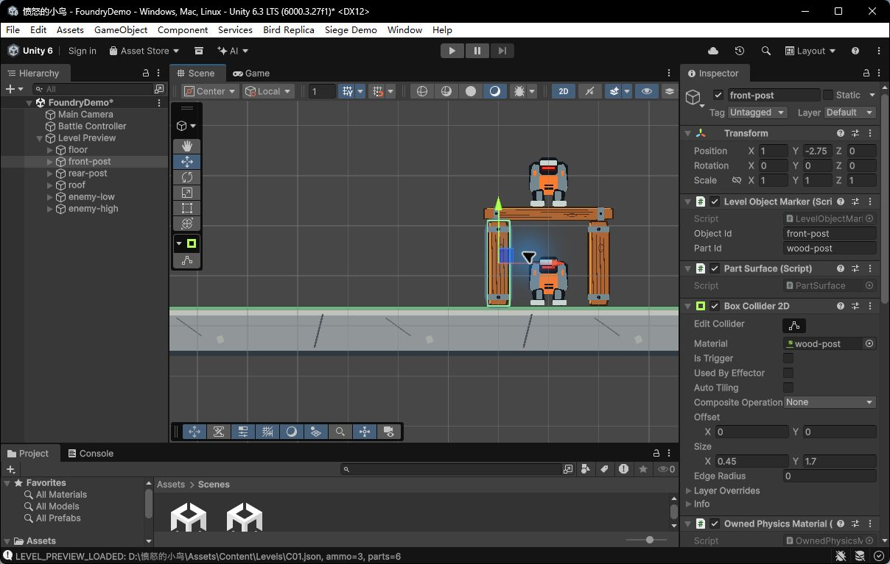
- 在左侧选中
front-post。右侧 Transform → Position 的 X 控制左右、Y 控制上下；这些坐标是物体中心。可直接输入数字，也可在 Scene 使用移动工具拖拽。 - 角度改 Rotation → Z，单位为度。地图在 XY 平面，Position Z 保持 0，Rotation X/Y 保持 0。
- 尺寸到 JSON 的
parts[].size修改；Transform 的 Scale 保持(1,1,1)，这样保存后的碰撞尺寸才与数据一致。 - 复制物体可选中后按 Ctrl+D，再修改 Level Object Marker → Object Id 为唯一名称，例如
extra-post，随后移动到新位置。
wood-post，但不能有相同的 Object Id。只改 Hierarchy 中显示的名称不能解决重复 ID。删除不需要的预览物体后可保存；关卡至少保留一个目标。摆塔时让支撑面接触，避免把两块实体深深插在一起。校验会检查旋转后的矩形穿插，但开场是否稳定仍要实际试射观察。
04把选中木柱改成玻璃
- 停在 Edit 模式，选中带有 Level Object Marker 的前柱。
- 选择
Siege Demo → Level → Material → Glass defaults。 - 检查 Scene 的颜色变化和 Marker 的 Part Id。工具会给这一件物体建立独立零件定义；后柱仍使用原木柱参数。
- 满意后按下一节的方法保存；想放弃草稿就选择
Reset preview to loaded snapshot。

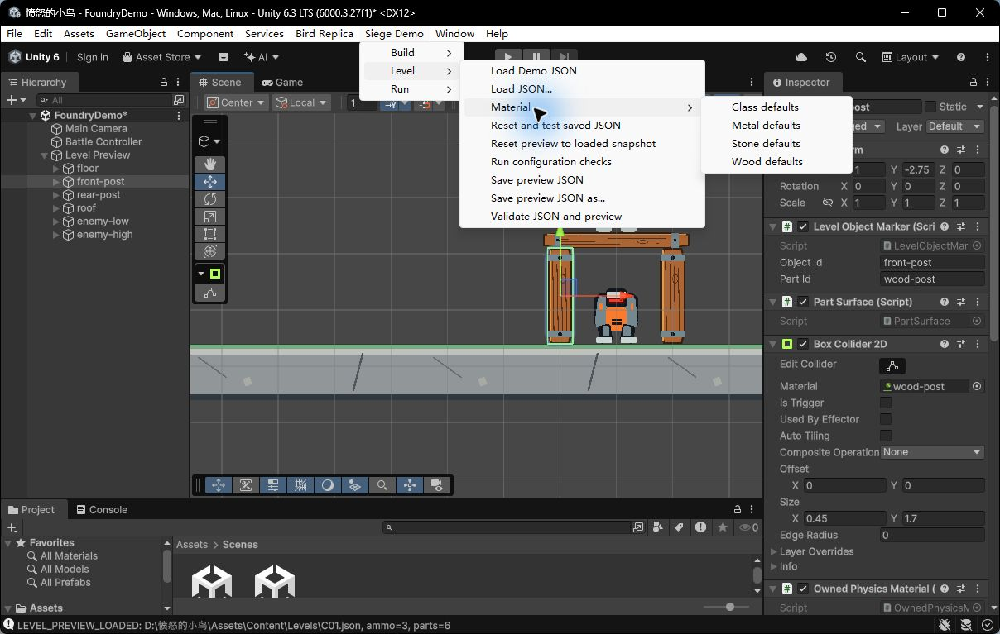

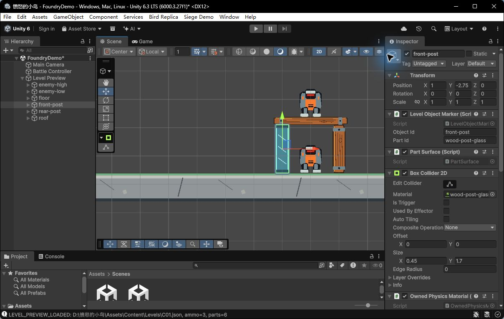
| 预设 | 质量 | 耐久 | 冲量门槛 | 伤害系数 | 摩擦 / 弹性 |
|---|---|---|---|---|---|
| Wood 木 | 1.4 | 8 | 1.5 | 1 | 0.70 / 0 |
| Glass 玻璃 | 0.65 | 3 | 0.7 | 1.35 | 0.45 / 0 |
| Stone 石 | 5 | 28 | 3 | 0.65 | 0.80 / 0 |
| Metal 金属 | 3 | 16 | 3 | 0.75 | 0.65 / 0 |
这些是每件物体的预设，不按体积自动换算。材质菜单保留尺寸、位置、对象角色及固定／地面／不可破坏标记。直接在 JSON 中只改 material 数字不会自动替换其余物理数值。
05保存数据，再做基础试射
- 编辑预览
- Save preview JSON
- Reset and test saved JSON
- 停止 Play
- 继续调参

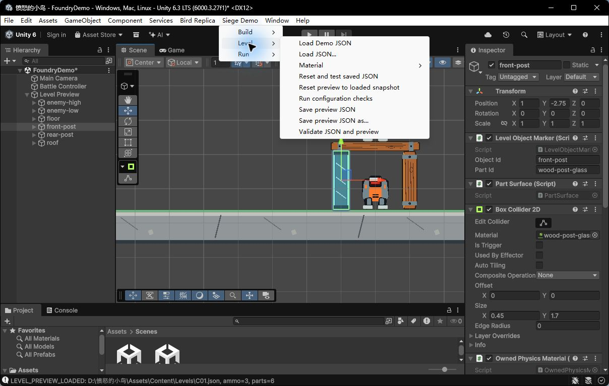
| 菜单 | 什么时候用 |
|---|---|
| Save preview JSON | 把当前预览位置、Z 角度、增删结果和材质草稿写回载入的 JSON。 |
| Save preview JSON as... | 另存实验版本。建议先创建 Assets/Content/Drafts，保存为 C01-test.json。 |
| Reset preview to loaded snapshot | 放弃未保存的预览改动，回到载入或上次保存的状态。不会读取外部刚改过的新文件。 |
| Reset and test saved JSON | 重读已保存的单关并进入基础物理试射。文件必须在 Assets 下，当前场景须有绑定好相机的 BattleController。 |

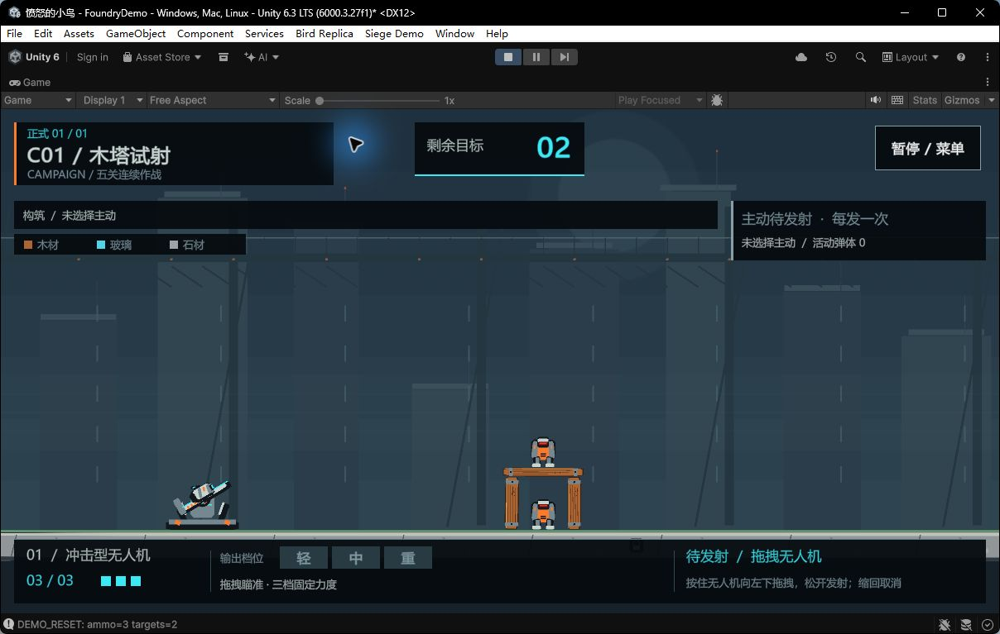
调主动／被动时：停止试射，再点 Unity 顶部正常 Play，进入主菜单，选对应练习。正式路线则从“开始正式作战”进入。

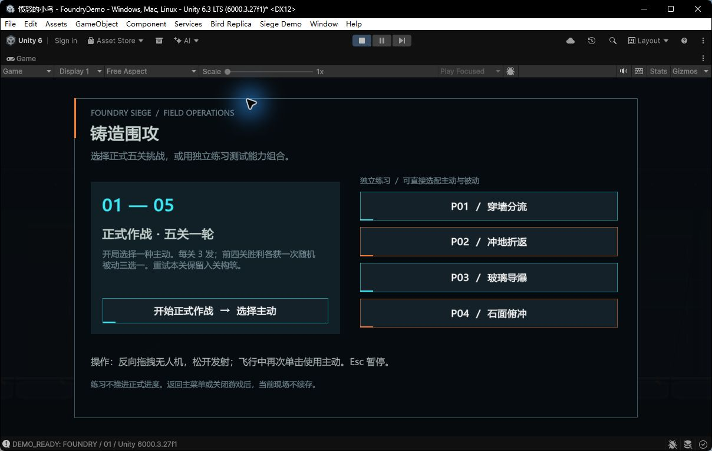
实验副本仍保留原内部 id，例如 C01。放在 Drafts 可以单关试射，但不会自动加入正式路线；当前路线与九关 ID 有固定校验，不要直接在 Levels 里复制多个同 ID 文件。
06修改发射、弹体和结算参数
用 Cursor、VS Code 或其他文本编辑器打开 Assets/Content/Levels/C01.json。改数字后保存，回到 Unity 等待导入，再用 Load JSON... 重载预览。

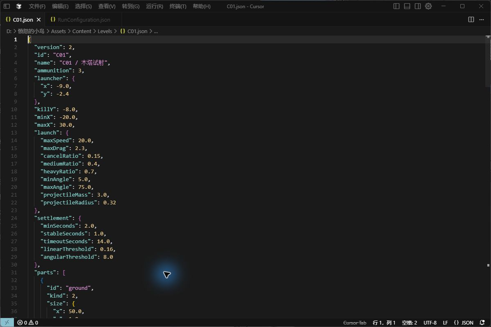
| 字段 | C01 当前值 | 含义与改动影响 |
|---|---|---|
| version / id / name | 2 / C01 / C01 木塔试射 | 单关格式版本、唯一关卡 ID、显示名称。修改布局时保留 version 和 id。 |
| ammunition | 3 | 每关弹药数。本版正式关和练习关都按三发规则校验；仅改成 4 会使整轮校验失败。 |
| launcher.x / y | −9 / −2.4 | 发射点中心。移动后检查初始弹体没有与地面或墙重叠。 |
| killY / minX / maxX | −8 / −20 / 30 | 世界清理边界与合法初始位置范围。扩大范围不会自动扩大摄像机视野。 |
| launch.maxSpeed | 20 | 重档初速。轻、中、重分别是它的 1/3、2/3、1 倍，当前约 6.67、13.33、20。 |
| launch.maxDrag | 2.3 | 最大拉距，按世界距离计算；越大，拉到相同档位需要拖得越远。 |
| cancelRatio / mediumRatio / heavyRatio | 0.15 / 0.4 / 0.7 | 拉距占 maxDrag 的比例。小于 0.15 取消；0.15～<0.4 轻档；0.4～<0.7 中档；≥0.7 重档。需满足 0≤取消<中<重<1。 |
| minAngle / maxAngle | 5 / 75 | 允许的发射角度（度），满足 0≤最小≤最大≤89.9。 |
| projectileMass | 3 | 原始弹体质量，影响碰撞与推倒效果；它不是直接伤害倍数。 |
| projectileRadius | 0.32 | 原始弹体半径。增大后更容易接触物体，也更难穿过狭缝。 |
| settlement.minSeconds | 2 | 一发结算的最短等待时间，避免刚发射就结算。 |
| settlement.stableSeconds | 1 | 满足稳定条件后继续保持多久才结束该发。 |
| settlement.timeoutSeconds | 14 | 最长结算时间；到时清理剩余弹体／效果，再判定。末发也会等结算，不会一松手就失败。 |
| linearThreshold / angularThreshold | 0.16 / 8 | 判断结构稳定的线速度／角速度阈值。角速度按度每秒；阈值越低越严格，通常等得更久。 |
质量、半径、最大速度与最大拉距都必须大于 0；稳定时长与超时也须为正，超时至少 1 秒且不能小于最短等待或稳定时长。每次只改一组值，更容易判断变化来自哪里。
07修改尺寸、耐久和碰撞属性
parts 是零件库，objects 是摆放清单。C01 的两根柱子都引用 wood-post，因此修改该定义会同时影响两根柱子。

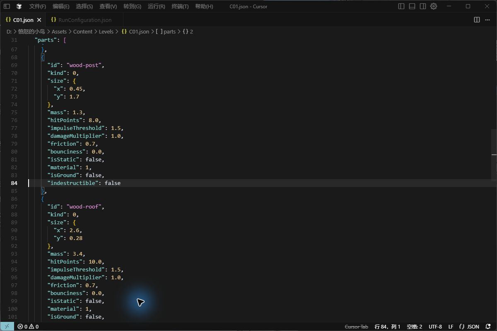
| 字段 | 木柱当前值 | 如何理解 |
|---|---|---|
| id | wood-post | 零件库唯一名称，供 objects[].partId 引用。 |
| kind | 0 | 0 普通梁材；1 敌方目标；2 平台。目标数量来自实际放置的 kind=1 对象。 |
| size.x / size.y | 0.45 / 1.7 | 完整宽度／高度，均须为正。尺寸变化后同步调整支撑位置，避免穿插或悬空。 |
| mass | 1.3 | 质量（正值）。增大会改变惯性、碰撞冲量和整座塔的重心关系。 |
| hitPoints | 8 | 初始耐久（正值）。可尝试 8→6，比较在相同射击下是否更容易断。 |
| impulseThreshold | 1.5 | 碰撞冲量免伤门槛（非负）。越高，小碰撞越不容易伤到它。 |
| damageMultiplier | 1 | 超过门槛部分的伤害系数（正值）。它控制这件零件受到的碰撞伤害。 |
| friction | 0.7 | 摩擦系数，范围 0～1。调高通常更不易滑，但不能保证不倒。 |
| bounciness | 0 | 物理弹性，范围 0～1。与“触地反弹”被动是两套作用。 |
| isStatic | false | true 为固定物体，不受动态重力移动；不等于不可破坏。 |
| material | 1 | 1 木、2 玻璃、3 石、4 金属。影响外观及材质相关能力判断。 |
| isGround | false | 是否作为地面供相应规则识别。地面必须固定；仅取名 floor 不够。 |
| indestructible | false | true 为不可破坏。敌方目标必须动态、可破坏、不是地面；Platform 必须固定。 |
有效碰撞中的核心伤害关系是 (冲量 − impulseThreshold) × damageMultiplier，同时受接近速度门槛、有效碰撞判断及当前剩余耐久上限约束。不能仅用质量推算最终伤害。
weak-post），将 hitPoints 改为 6；再只把前柱的 partId 改成 weak-post。材质菜单已经自动采用这种独立定义方式。08在 JSON 中精确配置地图坐标

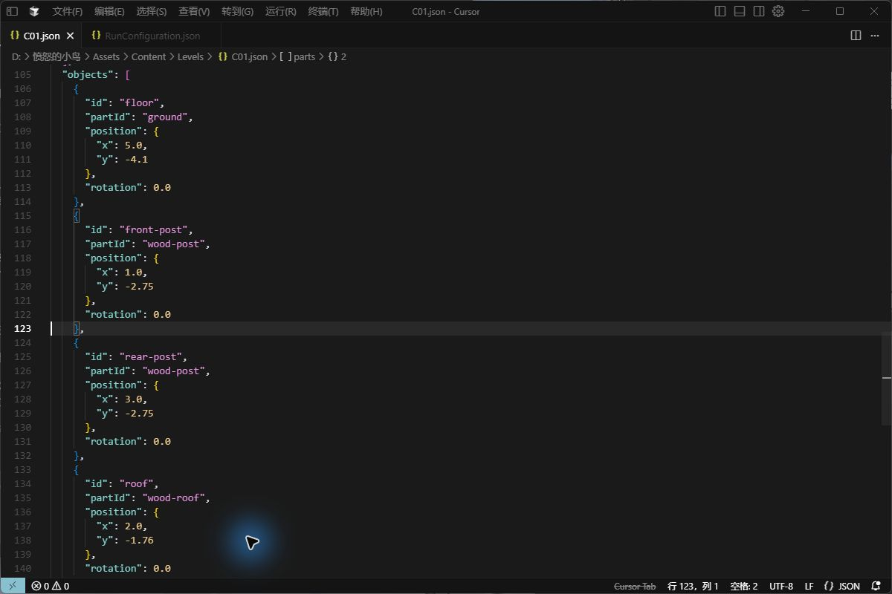
{
"id": "front-post",
"partId": "wood-post",
"position": { "x": 1.0, "y": -2.75 },
"rotation": 0.0
}这段是 objects 中的一项。id 标识这一根柱子；partId 决定它的尺寸与属性；position 决定中心位置；rotation 决定 Z 轴角度。例如 x: 1.0 → 1.2 会右移 0.2 个世界单位。这里是讲解示例，正式配置没有被改动。
| C01 物件 | partId | 中心 (X, Y) |
|---|---|---|
| floor 地面 | ground | (5, −4.1) |
| front-post 前柱 | wood-post | (1, −2.75) |
| rear-post 后柱 | wood-post | (3, −2.75) |
| roof 横梁 | wood-roof | (2, −1.76) |
| enemy-low 下层目标 | enemy | (2, −3.1) |
| enemy-high 上层目标 | enemy | (2, −1.12) |
需要重复一整组结构时
templates 存一组局部对象，structures 放置模板实例。世界位置 = 实例位置 + 旋转后的局部位置；世界角度 = 实例角度 + 局部角度。展开对象 ID 形如 实例ID/局部ID，也不能与其他对象重名。
初学阶段先用 objects 即可。通过 Unity 预览保存时，会把所有结构展开到 objects，并清空 structures；模板定义保留，但保存后的物体不再与模板实例关联。
09调整两主动、七被动
打开 Assets/Content/RunConfiguration.json，找到 abilities。这些是整轮共用参数，会影响正式作战和练习。保存后停止旧的 Play，再开始新测试。

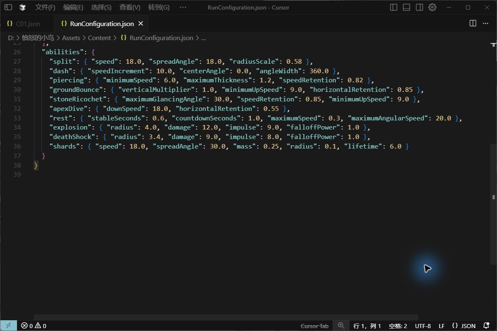
| 能力 / 分组 | 字段与当前值 | 作用与范围 |
|---|---|---|
空中分裂split | speed=18spreadAngle=18radiusScale=0.58 | 子弹固定初速，须为正；中心线到单侧的夹角，范围 0～89.9°，当前总张角 36°；子弹半径相对母体的比例，须大于 0 且小于 1。三枚子弹、各分得母体 1/3 质量由规则固定。 |
空中冲刺dash | speedIncrement=10centerAngle=0angleWidth=360 | 冲刺速度 = 触发瞬间速率 + 正增量；允许方向的中心角，世界向右为 0°；允许角宽，大于 0 且不超过 360°。当前全方向可用；中心 0、宽 180 表示右半平面。 |
穿木一次piercing | minimumSpeed=6maximumThickness=1.2speedRetention=0.82 | 最低穿木速度（非负）；可穿过的最大有效厚度（正值，斜穿会改变有效厚度）；穿后保速比例 0～1。每个可触发弹体按一次穿木规则处理。 |
触地反弹groundBounce | verticalMultiplier=1minimumUpSpeed=9horizontalRetention=0.85 | 竖直反弹系数（非负）；最小向上速度（正值）；水平保速 0～1。依赖 isGround 地面识别。 |
石面跳弹stoneRicochet | maximumGlancingAngle=30speedRetention=0.85minimumUpSpeed=9 | 相对表面切线的最大擦撞角，0～89.9°；保速 0～1；最小向上速度为正。成功跳弹才消耗这次效果。 |
顶点俯冲apexDive | downSpeed=18horizontalRetention=0.55 | 触发时赋予的向下速度（正值）与水平保留比例（0～1）。在符合规则的自然顶点触发；不能通过重复赋值持续加速。 |
停驻爆破：停驻判定rest | stableSeconds=0.6countdownSeconds=1maximumSpeed=0.3maximumAngularSpeed=20 | 稳定保持时长、随后引爆倒计时（秒，均为正）；允许的最大线速度与角速度（非负）。需有支撑，重新运动会打断。这里的稳定参数不同于单关 settlement。 |
停驻爆破：爆炸强度explosion | radius=4damage=12impulse=9falloffPower=1 | 作用半径、直接伤害、推力、距离衰减幂。半径和衰减幂为正；伤害和推力非负，分别调整。 |
连锁冲击（死亡冲击）deathShock | radius=3.4damage=9impulse=8falloffPower=1 | 字段含义与 explosion 相同。直接伤害和推力均要考虑遮挡；看到后续倒塌不等于直接伤害穿过了掩体。 |
破片扩散（玻璃破片）shards | speed=18spreadAngle=30mass=0.25radius=0.1lifetime=6 | 破片速度、两枚破片的总夹角、每枚质量、半径和寿命（秒）。角度 0～180°，其余均为正。这里 30° 表示两侧各偏 15°，与 split 的单侧夹角定义不同。 |
爆炸衰减采用 pow(clamp01(1 − 距离/半径), falloffPower)。当前幂为 1，即线性衰减；幂增大后，远处效果衰减更快。物理速度按世界单位每秒，角度按度，角速度按度每秒理解。
10配置练习的默认主动和被动

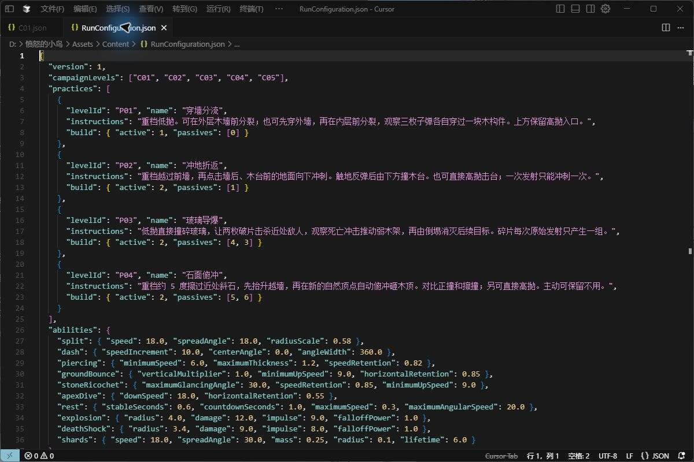
| 字段 | 改哪里 |
|---|---|
| levelId | 保持 P01～P04 的既有对应关系；关联到相应地图 id。 |
| name / instructions | 练习名称与操作说明，可编辑中文文本，必须非空。 |
| build.active | 1 = 空中分裂；2 = 空中冲刺。练习默认主动不接受 0。 |
| build.passives | 用下表中的整数列表配置，例如 [0,2] 是穿木＋停驻爆破。不能重复或使用未知 ID。 |
| 被动 ID | 能力 | 参数分组 |
|---|---|---|
| 0 | 穿木一次 | piercing |
| 1 | 触地反弹 | groundBounce |
| 2 | 停驻爆破 | rest + explosion |
| 3 | 连锁冲击 / 死亡冲击 | deathShock |
| 4 | 破片扩散 / 玻璃破片 | shards |
| 5 | 石面跳弹 | stoneRicochet |
| 6 | 顶点俯冲 | apexDive |
当前默认：P01 = 主动 1＋[0]；P02 = 主动 2＋[1]；P03 = 主动 2＋[4,3]；P04 = 主动 2＋[5,6]。主菜单进入练习后，还可以在界面临时勾选构筑。

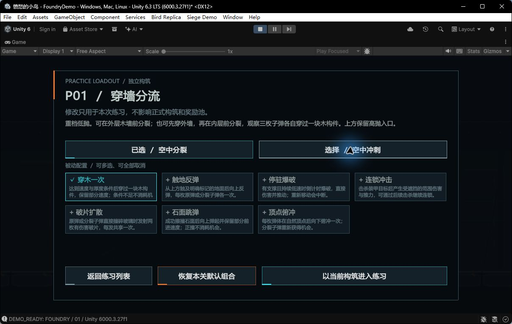
测试主动时，先按住无人机反向拖拽并松手发射；飞行中再用一次新的左键点击触发。分裂沿当时飞行方向展开，冲刺朝点击点改向。若只想比较被动，尽量重复同一角度、同一档位。
campaignLevels 固定为 C01→C02→C03→C04→C05，练习固定为 P01～P04。新增 C06 或任意重排正式路线还涉及校验、关卡绑定和流程代码，当前不能只改列表就完成。11校验通过，再生成新版游戏
先保存 JSON。可以用 Siege Demo → Level → Validate JSON and preview 检查当前文本或预览；用 Siege Demo → Run → Validate configuration and nine levels 检查整轮与九关。
完整检查入口是 Siege Demo → Build → Validate。它会重新打开正式场景，因此执行前要把预览改动保存进 JSON。菜单中的 Generate playable scene 会重新生成并绑定正式场景，日常调数字不需要反复执行。

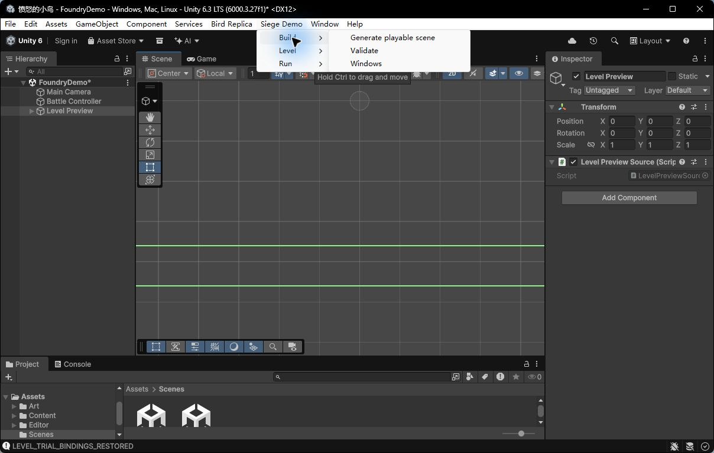

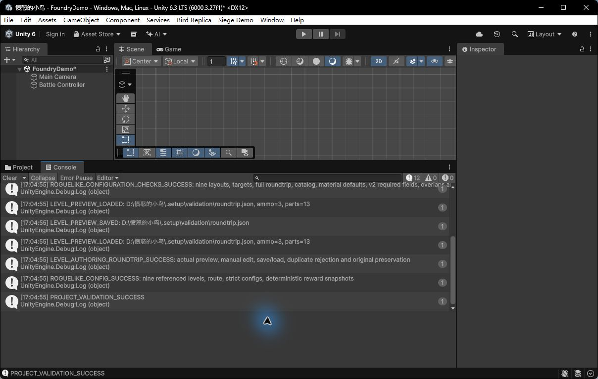
配置已编入游戏数据。修改工程 JSON 不会改变已经构建好的 exe；包内 Reference JSON 也只是参考。要交付新数值，先完成 Editor 试玩，再重新构建并运行 Smoke。
批处理前关闭本项目 Unity Editor；构建前关闭正在运行的同版本游戏。在工程目录的 PowerShell 中按顺序运行：
pwsh -File Tools/Unity.ps1 Validate
pwsh -File Tools/Unity.ps1 Build
pwsh -File Tools/Unity.ps1 SmokeBuild 当前输出 Builds/Windows-v0.2/FoundrySiege.exe。Smoke 会实际运行玩家并检查物理与流程。保留旧交付包，记录每次修改及验证结果；源码、JSON、对应 .meta 进入 Git，Library、Logs、Builds 等生成内容保持忽略。
此次教程只新增文档与原始截图，未重新构建游戏。实际做了材质预览、基础试射、正常主菜单／练习入口查看和 Editor Validate；正式关卡与能力 JSON 未修改。
12第一次练习：做一根更脆的前柱
- 打开 FoundryDemo，Load JSON... 载入 C01。
- 选中 front-post，先记住 Position
(1,−2.75,0)、Part Idwood-post。 - 执行 Material → Glass defaults，确认只有前柱改变，后柱仍是木材。
- 在 Assets/Content 下创建 Drafts 文件夹，执行 Save preview JSON as...，保存
Drafts/C01-test.json。内部 id 保留 C01 即可用于这个单关实验。 - 执行 Reset and test saved JSON，用同样的角度和档位试射，观察前柱破坏与倒塌。
- 停止 Play，再 Load 刚才的实验 JSON，确认玻璃前柱还在；这证明保存的是初始地图数据。
- 重新载入正式 C01，比较两种地图。之后再尝试修改实验副本的 hitPoints，每次只改一个参数。
下一次可以练习 launch.maxSpeed: 20 → 22 对三档弹道的影响，或在 RunConfiguration 中调整 split.spreadAngle 后进入 P01 比较分流宽度。后者是共用参数，会同时影响其他关卡，应保留原值并记录实验。
遇到问题时，先看这里
| 现象 | 处理方式 |
|---|---|
| Scene 里没有塔 | 打开 FoundryDemo 后，Load JSON... 载入 C01。基础场景只有相机和控制器是正常的。 |
| 移动过了，试射还是旧位置 | 先 Save preview JSON。试射从磁盘重载，未保存预览不会参与。 |
| 复制物体后保存报重复 ID | 改 Level Object Marker 的 Object Id；仅改 Hierarchy 名称不够。 |
| 改 Collider、Scale、刚体后不能保存 | 恢复这些手改属性，在 JSON 的 parts 中改尺寸和物理值，再重新 Load。预览只支持 schema 可完整表达的改动。 |
| 外部改过 JSON，Unity 提示冲突 | 先保留需要的草稿，再 Load 外部最新文件，或另存草稿。旧预览不能直接覆盖外部新文件。 |
| 保存 JSON 后解析失败 | 查看 Console 的字段路径。保留所有必填字段；数字不加引号；布尔值写 true/false；禁止注释、尾逗号、重名字段和拼错字段。 |
| 只有木柱变色，耐久没变 | 仅改 material 不会重设其他数字。想整套切换，用 Material → 对应 defaults，或显式填写其他参数。 |
| 试射没有分裂／冲刺 | Reset and test saved JSON 是无能力基础试射。停止后正常 Play，从练习或正式入口选主动。 |
| 塔一开场就滑动或倒塌 | 检查穿插、接触面、重心、质量和摩擦。几何校验通过之后，仍需反复进入／重试观察实际物理。 |
| 新增目标后数量没变 | 确认放置对象的 partId 指向 kind=1 的零件、已保存且重载。目标数从实际对象生成。 |
| 改完工程，旧 exe 没变化 | 重新 Validate、Build、Smoke，再运行新输出；当前没有外部 JSON 热加载。 |